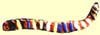
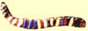

|
|
A Neighborhood History |
The Denny Family David Denny arrived at the Duwamish River in September 1851, nearly two months before the party led by his older brother Arthur landed at Alki Point. They both established land claims on Elliott Bay and played important roles in founding Seattle. In 1870, David Denny purchased 160 acres, including Licton Springs, from the U.S. government for $1.25 an acre and built a summer cabin. Thinking of building a health resort, he had the water tested. He found it to be healthful, with sodium chloride, carbonate of soda, and traces of iron, lime and other minerals. David and Louisa Denny donated the site of Oak Lake School (today's Oak Tree Village), which opened in 1886. In 1891, they platted Oak Lake Cemetery, now part of Evergreen-Washelli Cemetery. However, in the "Panic of 1893," Denny's trolley lines and mill went into bankruptcy. David and Louisa were forced to move, first to a small house in Fremont and later to Licton Springs. About 1890, David Denny built a larger house near Licton Springs as a country retreat. He gave this house to his oldest child, Emily Inez, an artist who wrote a book, Blazing the Way, about her family's role in the founding of Seattle. This house still stands, although considerably altered, on Densmore Avenue North. Arthur Denny sold property near Licton Springs to his second cousins, Henry L. Denny and John W. Denny. Henry and his wife Lucinda platted land north of Green Lake and, about 1905, built a house that still stands on Wallingford Avenue North near 88th. At the turn of the century, Henry's brother, John W. Denny and his wife Mary, built a farmhouse that still sits on a hilltop off of Corliss Avenue North.

Welcome
| Local Interest |
Neighborhood in Action |